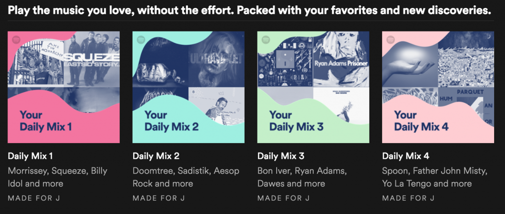

Spotify:
Spotify uses a primary AI function that allows the app to recommend new music or known as collaborative filtering, meaning that the AI will suggest new songs or artists to you personally based on your listening habits. Spotify’s AI function gathers bits of data from your personal taste profile which will then enable it to curate personalized playlists such as the “Discover Weekly”, which reached over 40 million people in the first year it was introduced to users. The machine learning in Spotify enables the recommendations to improve over time. Not only does it keep users entertained and returning back, it also gives a greater exposure for artists who users may not search specifically for organically.
Netflix:
Netflix’s recommendation engine is a data filtering tool that uses algorithms to filter a specific catalog predicting relevant shows and products to the user, and it combines both content-based and collaborative-based approaches.The algorithm is collected and it learns the data from users. On the other hand, a collaborative-based approach analyses all of the service's users and proposes a new user based on the relevant things of other users with similar tastes to yours, therefore, recommending what you may be most interested in so that you will stay engaged and keep paying for your monthly subscriptions. Netflix also uses an algorithm that checks if the user likes this type of category or not. So for example, let's say you selected a movie that you’ve never heard before and you only watch 5 minutes of it and stop watching it. Netflix will use this information and data to process it and it will learn that this type of “movie” or “genre” you just watched, seems to have no interest in.
Spotify 'Daily Mix' Example:
 Made 6th June 2021